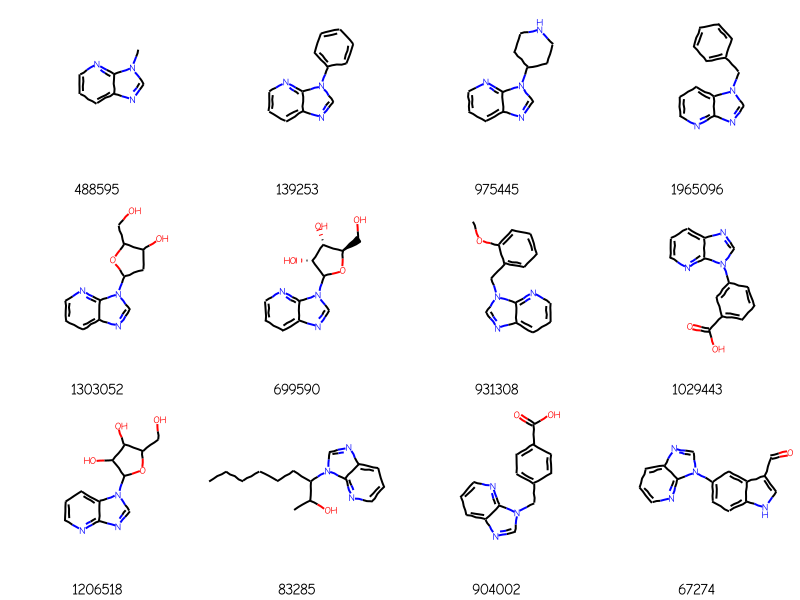
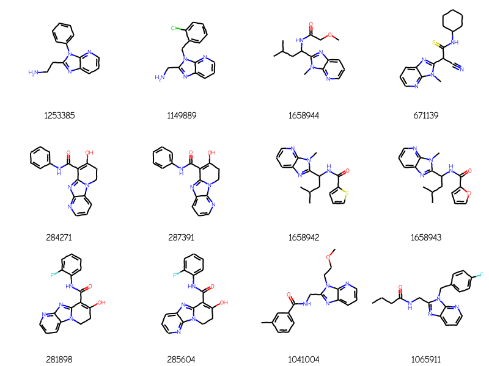
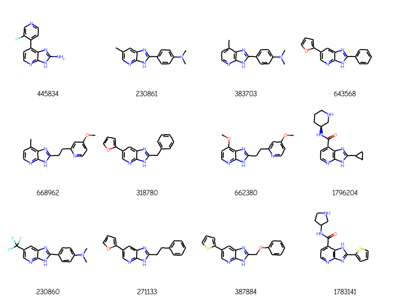
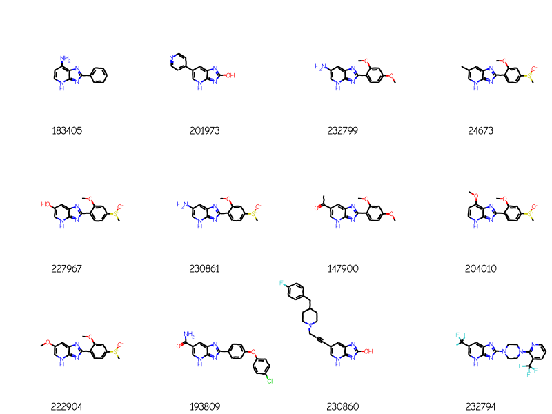
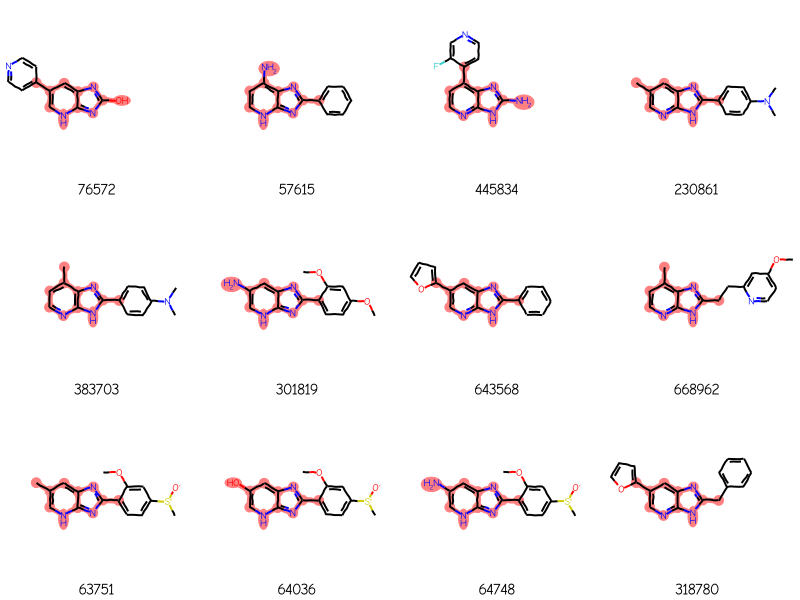
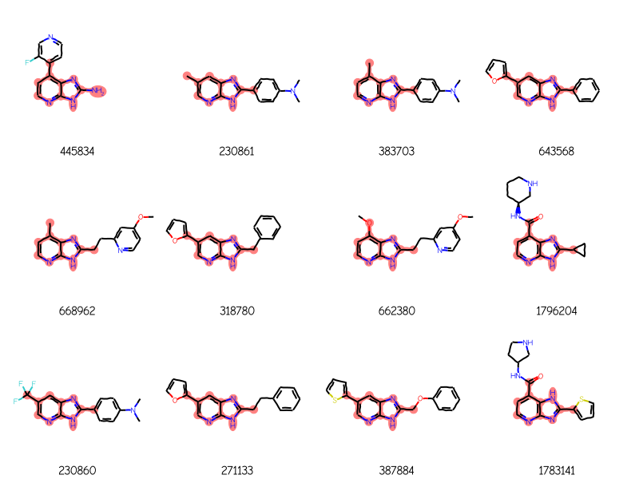
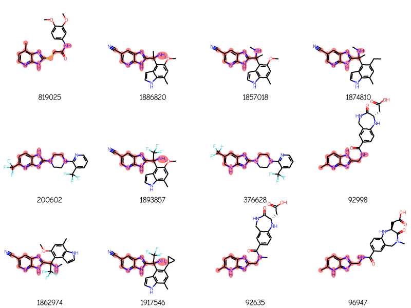

[Updated 10.03.2023 by Charles T Hoyt to demonstrate the use of his chembl_downloader][Updated 19.12.2021 to use new functionality from the 2021.09 RDKit release]
Over the last couple of releases we’ve added a number of RDKit features which allow useage of more advanced substructure query features and more control over the results returned by substructure searches. These include
Chem.AdjustQueryProperties() to tune the results returned by a substructure query
rdMolEnumerator.Enumerate() to enumerate some V3000 mol block query features (as of the 2021.03 release the supported features are variable attachment points and link nodes)
rdTautomerQuery.TautomerQuery() to allow tautomer-insensitive substructures search
In this post I’ll show how to use all of those together to do “generalized substructures searching” with the RDKit. Towards the bottom of the post there are a couple of Python functions which can be used in other scripts to make this process easier. I’ll also try and figure out a good way to get that into a future RDKit release.
AAs an example, here’s a query:
and here are four ChEMBL molecules returned using that query:
Load a SubstructLibrary created using ChEMBL 29. The chembl_downloader Python package is used to abstract away downloading and parsing the ChEMBL SDF data. More information can be found in this blog post: https://cthoyt.com/2021/08/04/taming-chembl-sdf.html. The code used to construct this is:
from rdkit import RDLoggerfrom rdkit import Chemfrom rdkit.Chem import rdSubstructLibraryimport pickle, timeimport gzipimport chembl_downloaderRDLogger.DisableLog("rdApp.warning")with chembl_downloader.supplier(version="29") as suppl: t1=time.time() data = []for i,mol inenumerate(suppl):ifnot ((i+1)%50000):print(f"Processed {i+1} molecules in {(time.time()-t1):.1f} seconds")if mol isNoneor mol.GetNumAtoms()>50:continue fp = Chem.PatternFingerprint(mol,fpSize=1024,tautomerFingerprints=True) smi = Chem.MolToSmiles(mol) data.append((smi,fp))t2=time.time()pickle.dump(data,open('../data/chembl29_sssdata.pkl','wb+'))t1=time.time()mols = rdSubstructLibrary.CachedTrustedSmilesMolHolder()fps = rdSubstructLibrary.TautomerPatternHolder(1024)for smi,fp in data: mols.AddSmiles(smi) fps.AddFingerprint(fp)library = rdSubstructLibrary.SubstructLibrary(mols,fps)t2=time.time()print(f"That took {t2-t1:.2f} seconds. The library has {len(library)} molecules.")pickle.dump(library,open('../data/chembl29_ssslib.pkl','wb+'))
import picklewithopen('./results/chembl29_ssslib.pkl','rb') as inf: sslib = pickle.load(inf)print(f'SubstructLibrary loaded with {len(sslib)} molecules')
SubstructLibrary loaded with 2049078 molecules
Enumeration
Start with a query including a variable attachment point:
bndl = rdMolEnumerator.Enumerate(qry)matches = sslib.GetMatches(bndl)print(f'{len(matches)} matches')mols = [sslib.GetMol(x) for x in matches]# sort the molecules by number of atoms and preserve the match IDsorted_res =sorted(zip(mols,matches),key=lambda x:x[0].GetNumAtoms())sorted_mols,sorted_matches =zip(*sorted_res)Draw.MolsToGridImage(sorted_mols[:12],legends=[str(x) for x in sorted_matches],molsPerRow=4)
1000 matches
Those include some addditional rings attached to the core in molecules like 1476, 10083, and 10853. We can prevent that by calling AdjustQueryProperties():
bndl = Chem.MolBundle()for m in rdMolEnumerator.Enumerate(qry): bndl.AddMol(Chem.AdjustQueryProperties(m))matches = sslib.GetMatches(bndl)print(f'{len(matches)} matches')mols = [sslib.GetMol(x) for x in matches]# sort the molecules by number of atoms and preserve the match IDsorted_res =sorted(zip(mols,matches),key=lambda x:x[0].GetNumAtoms())sorted_mols,sorted_matches =zip(*sorted_res)Draw.MolsToGridImage(sorted_mols[:12],legends=[str(x) for x in sorted_matches],molsPerRow=4)
148 matches

An aside: this would be more convenient if AdjustQueryProperties directly supported passing MolBundle objects. That’s something for a future version.
Now let’s make the query more complex by adding a link node in addition to the variable attachment point:
bndl = rdMolEnumerator.Enumerate(qry)matches = sslib.GetMatches(bndl)print(f'{len(matches)} matches')mols = [sslib.GetMol(x) for x in matches]# sort the molecules by number of atoms and preserve the match IDsorted_res =sorted(zip(mols,matches),key=lambda x:x[0].GetNumAtoms())sorted_mols,sorted_matches =zip(*sorted_res)Draw.MolsToGridImage(sorted_mols[:12],legends=[str(x) for x in sorted_matches],molsPerRow=4)
193 matches

Enumeration + tautomer-insensitive queries
Here we will use the RDKit’s TautomerQuery class to do tautomer-insensitive substructure queries. We start by enumerating the molecules, as above, but then convert each of the results into a TautomerQuery
To see what’s going on here it helps to have the result molecules all aligned the same way. In order to do that we also need to generate query molecules with aligned coordinates.
from rdkit.Chem import rdFMCSdef getAlignedQueries(qry):# generate a conformer for the query if we don't have one alreadyifnot qry.GetNumConformers(): rdDepictor.Compute2DCoords(qry) bndl = rdMolEnumerator.Enumerate(qry)# find the MCS of the enumerated molecules: mcs = rdFMCS.FindMCS(bndl) qmcs = Chem.MolFromSmarts(mcs.smartsString)# and now adjust the properties, generate coordinates, and create the TautomerQuery queries = []for q in bndl: q = Chem.AdjustQueryProperties(q) rdDepictor.GenerateDepictionMatching2DStructure(q,qry,refPatt=qmcs) queries.append(rdTautomerQuery.TautomerQuery(q))return queriesdef drawAlignedMols(mols,qry,legends=None,molsPerRow=4): queries = getAlignedQueries(qry)for i,m inenumerate(mols):for q in queries:if q.IsSubstructOf(m): rdDepictor.GenerateDepictionMatching2DStructure(m,q.GetTemplateMolecule())return Draw.MolsToGridImage(mols,legends=legends,molsPerRow=molsPerRow)
Start by doing a tautomer-sensitive query to see how many results we get:
bndl = rdMolEnumerator.Enumerate(qry)matches = []for m in bndl: m = Chem.AdjustQueryProperties(m) matches.extend(sslib.GetMatches(m))print(f'{len(matches)} matches')mols = [sslib.GetMol(x) for x in matches]# sort the molecules by number of atoms and preserve the match IDsorted_res =sorted(zip(mols,matches),key=lambda x:x[0].GetNumAtoms())sorted_mols,sorted_matches =zip(*sorted_res)drawAlignedMols(sorted_mols[:12],qry,[str(x) for x in sorted_matches])
276 matches

Now do the tautomer-insensitive version of that and show just the new molecules
bndl = rdMolEnumerator.Enumerate(qry)matches2 = []for m in bndl: m = Chem.AdjustQueryProperties(m) tqry = rdTautomerQuery.TautomerQuery(m) matches2.extend(sslib.GetMatches(tqry))extras =set(matches2).difference(matches)print(f'{len(matches2)} matches, {len(extras)} are non-overlapping')mols = [sslib.GetMol(x) for x in extras]# sort the molecules by number of atoms and preserve the match IDsorted_res =sorted(zip(mols,matches),key=lambda x:x[0].GetNumAtoms())sorted_mols,sorted_matches =zip(*sorted_res)drawAlignedMols(sorted_mols[:12],qry,[str(x) for x in sorted_matches])
288 matches, 12 are non-overlapping

Bring it all together
Now let’s put that all together in one function and include the information required to do atom highlighting in the structure drawings
from rdkit.Chem import rdFMCSfrom rdkit.Chem import rdTautomerQuery# this function does the enumeration of the queriesdef getAlignedQueries(qry,tautomerInsensitive=True):ifnot qry.GetNumConformers(): rdDepictor.Compute2DCoords(qry) bndl = rdMolEnumerator.Enumerate(qry)# find the MCS of the enumerated molecules: mcs = rdFMCS.FindMCS(bndl) qmcs = Chem.MolFromSmarts(mcs.smartsString)# and now adjust the properties, generate coordinates, and create the TautomerQuery queries = []for q in bndl: q = Chem.AdjustQueryProperties(q) rdDepictor.GenerateDepictionMatching2DStructure(q,qry,refPatt=qmcs)if tautomerInsensitive: q = rdTautomerQuery.TautomerQuery(q) queries.append(q)return queriesdef generalizedSubstructureSearch(query,sslib,tautomerInsensitive=True,alignResults=True, maxResults=1000): queries = getAlignedQueries(query,tautomerInsensitive=tautomerInsensitive) matches = []for q in queries: matches.extend(sslib.GetMatches(q,maxResults=maxResults)) tmols = [(x,sslib.GetMol(x)) for x in matches] mols = []for idx,mol insorted(tmols,key=lambda x:x[1].GetNumAtoms()): match =Noneif(alignResults):for q in queries:if tautomerInsensitive: match = q.GetSubstructMatch(mol)if match: rdDepictor.GenerateDepictionMatching2DStructure(mol,q.GetTemplateMolecule())breakelse: match = mol.GetSubstructMatch(q)if match: rdDepictor.GenerateDepictionMatching2DStructure(mol,q)break mols.append((idx,mol,match))iflen(mols)>=maxResults:breakreturn mols
res = generalizedSubstructureSearch(qry,sslib)ids,mols,matchAtoms =zip(*res)print(f'{len(mols)} results')Draw.MolsToGridImage(mols[:12],legends=[str(x) for x in ids],highlightAtomLists=matchAtoms, molsPerRow=4)
288 results

res = generalizedSubstructureSearch(qry,sslib,tautomerInsensitive=False)ids,mols,matchAtoms =zip(*res)print(f'{len(mols)} results')Draw.MolsToGridImage(mols[:12],legends=[str(x) for x in ids],highlightAtomLists=matchAtoms, molsPerRow=4)
276 results

Last example, link nodes + variable attachment + tautomer enumeration
res = generalizedSubstructureSearch(qry,sslib)ids,mols,matchAtoms =zip(*res)print(f'{len(mols)} results')Draw.MolsToGridImage(mols[:12],legends=[str(x) for x in ids],highlightAtomLists=matchAtoms, molsPerRow=4)
24 results

Image for the blog post summary:
keep = [0,1,4,6]ids,mols,matchAtoms =zip(*[res[x] for x in keep])Draw.MolsToGridImage(mols[:12],legends=[str(x) for x in ids],highlightAtomLists=matchAtoms, molsPerRow=2,subImgSize=(300,250))